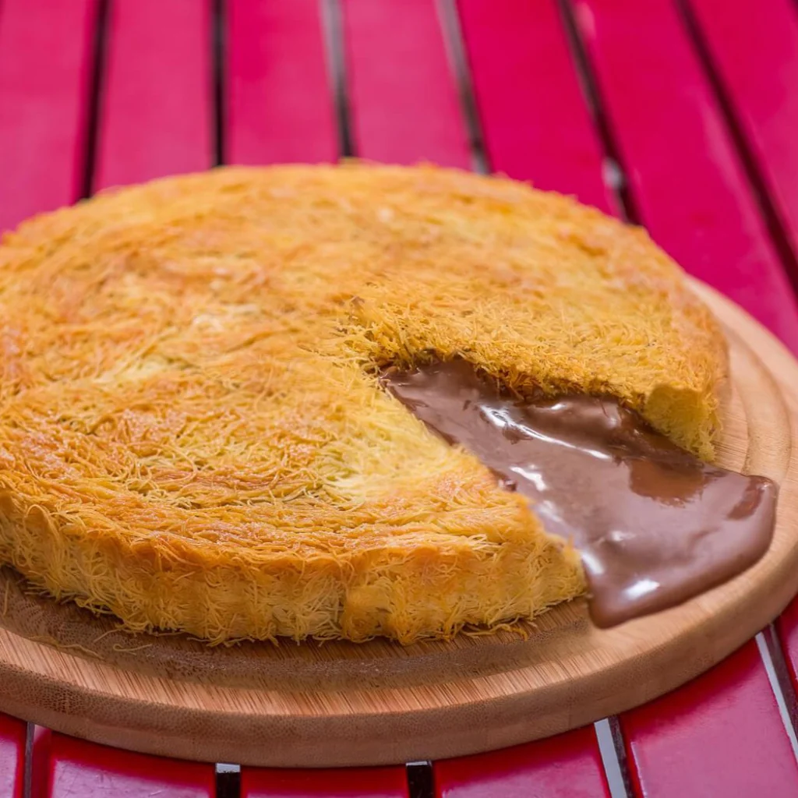
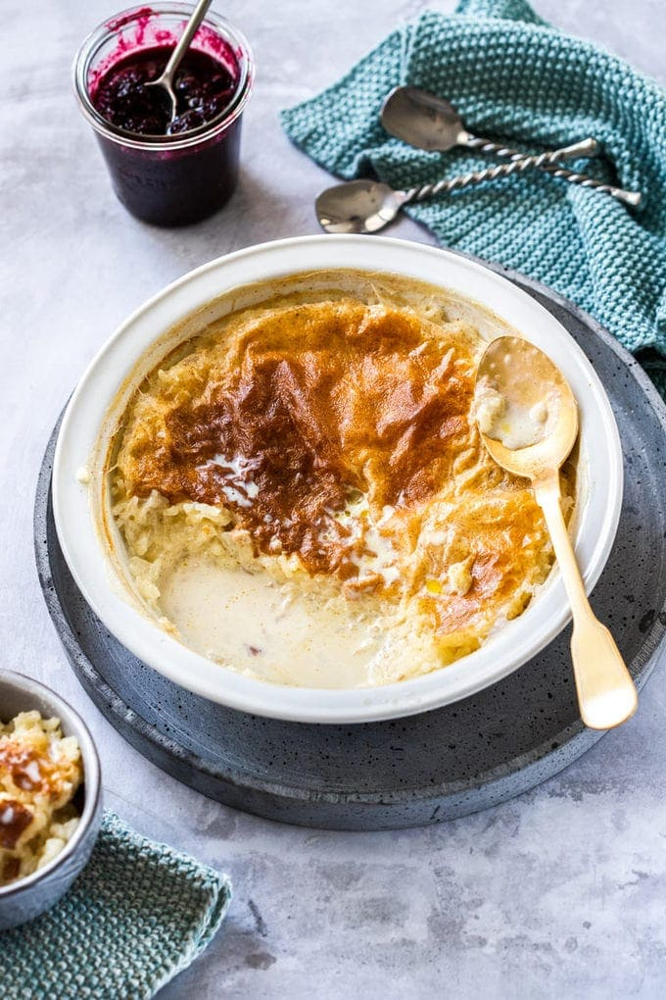

Hafiz Mustafa 1864 is a Turkish purveyor of sweets and delicacies which originated and is still headquartered in Istanbul. It was Founded in 1864 by Hadji İsmail Hakkı Bey during the reign of Sultan Abdulaziz at shop number 86 on the viaduct which today is known as Hamidiye street in the Fatih district of Istanbul.[1] Hakki Bey began by producing Rock candy.[2] The Hafiz Mustafa operation won 12 gold medals in confectionery in Europe between 1926 and 1938.[3] In the present it is run by the Ongular family who have owned it since 2007. Among their offerings are Turkish delights, Baklavas, puddings, teas, and assorted sweets.

The history of Hafez Mustafa goes back to the 19th century. There were famous confectioners in Anatolia in Istanbul in the 19th century. Those who came to the capital from the arid towns of Anatolia may have taken refuge in this branch of the profession in solidarity with their fellow countrymen. Ismail Haki Bey, who came from the central city of Cankiri, found himself among the confectioners of Hamidiye Street in Bahcekapi, although his art was serafIn. 1864, he began making rock candy in the basement of the building where he acquired the space; He became the person who introduced and loved pastries to the people of Istanbul with his sons who helped him in addition to the variety of this habit and the increasing sweets. Mustafa, one of his sons, helped his father on the one hand and was a muezzin in the Arbaşilar Mosque. The flavor and centuries-old trading traditions of the property have changed hands for more than a hundred years, but the location of the first candy store and the lingering taste buds have never changed.
| name | image | PRISE |
|---|---|---|
| Pistachio Carrot Baklava |  |
AED 45 |
| Walnut Cimcik Baklava |  |
AED 45 |
| Pistachio Sultan Baklava |  |
AED 49 |
| Walnut Princess Baklava |  |
AED 45 |
| Chocolate Kunafa |  | AED 49 |
| Baked Rice Pudding |  | AED 49 |
| Chocolate Eclairs Mini |  |
AED 45 |
Click the "Submit" button and the form-data will be sent to a page on the server.